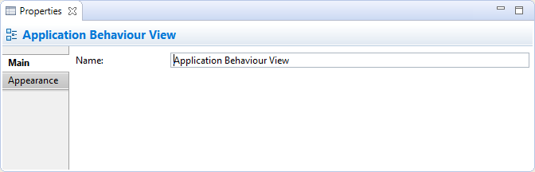
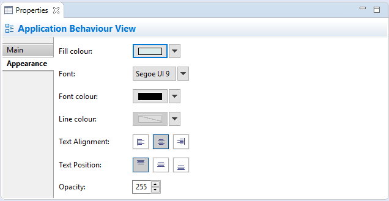

Selecting a View Reference in a View means that you can edit or view the following properties in the Properties Window.
The Main Tab
Editing the "Main" Properties for a View Reference
| Name: | The name of the View |
The Appearance Tab
Editing the "Appearance" Properties for a View Reference
| Fill colour: | Sets the fill colour for the selected object. The "Default" button sets the fill colour to the default setting. |
| Line colour: | Sets the colour of the line used to draw the selected object. The "Default" button sets the line colour to the default setting. If this is disabled it is because line colours are derived from the object's fill colour, as set in Preferences. |
| Gradient: | Sets the direction used to draw the gradient fill of the selected element. Settings are "None", "Top", Left", "Right" and "Bottom". Note - gradients will not show when a diagram is exported in SVG image format. |
| Text Alignment: | Align text in the selected object to Left, Centred or Right. |
| Text Position: | Align text in the selected object to Top, Middle or Bottom. |
| Font: | Sets the font used for the text in the selected object. The "Default" button sets the font to the default setting as set in Preferences. |
| Font colour: | Sets the colour of the font used for the text in the selected object. The "Default" button sets the font colour to the default setting. |
| Fill Opacity: | Set the fill opacity of the figure. Range from 0-255. |
| Outline Opacity: | Set the outline opacity of the figure. Range from 0-255. |